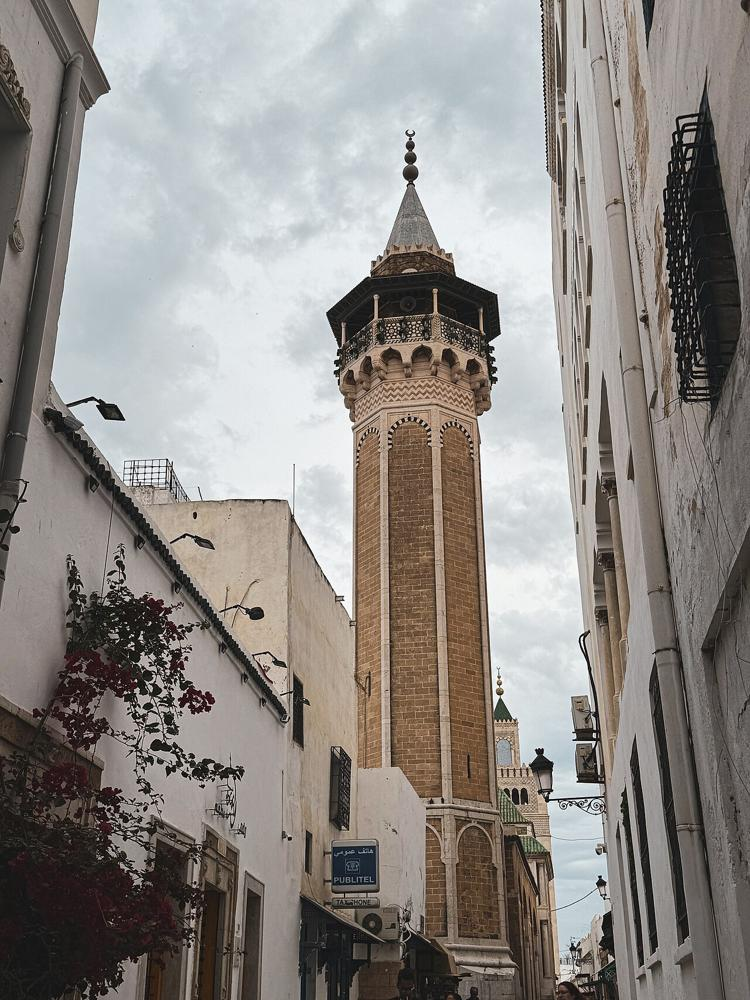
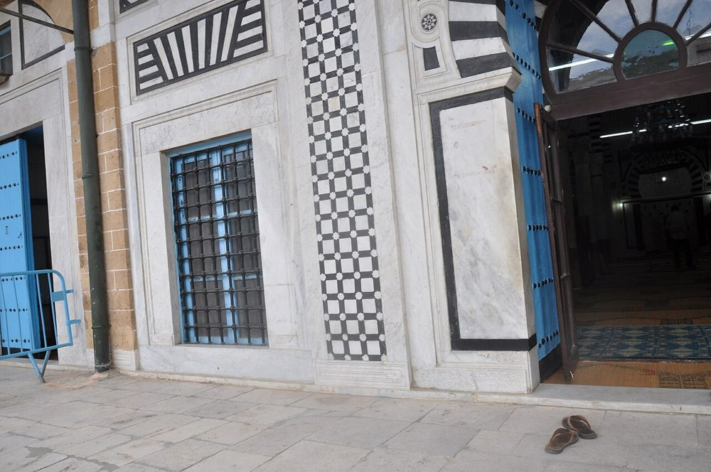
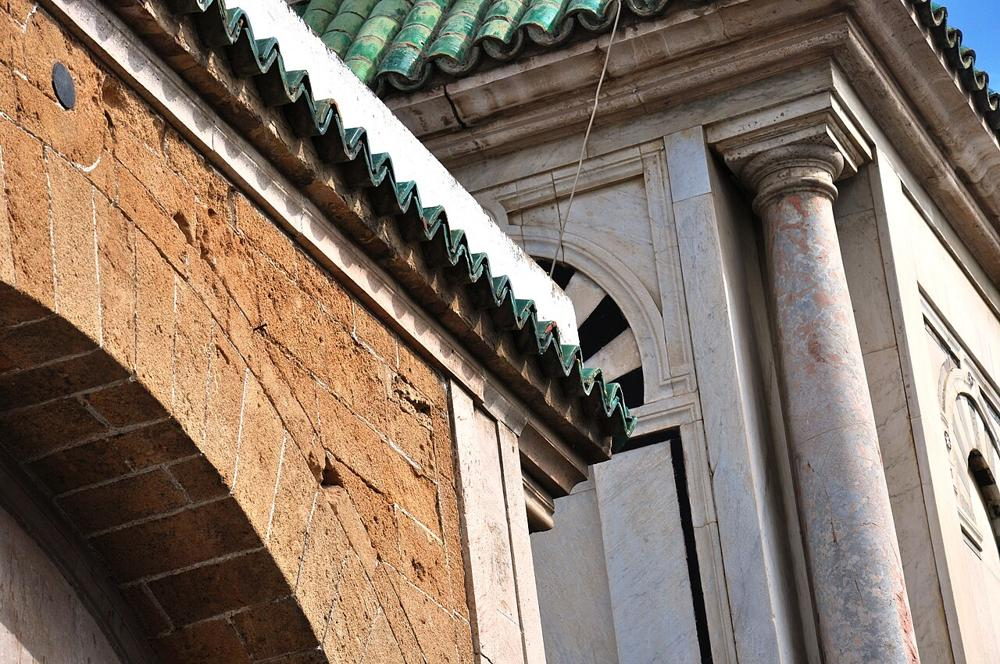
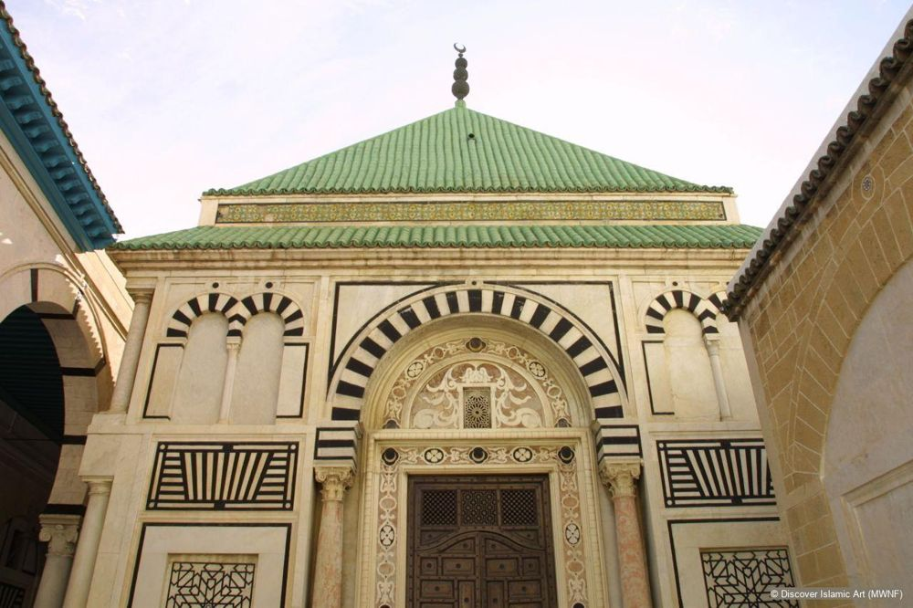
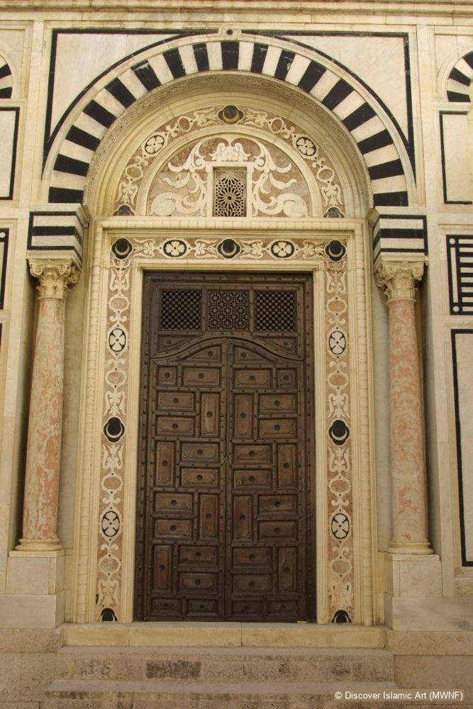
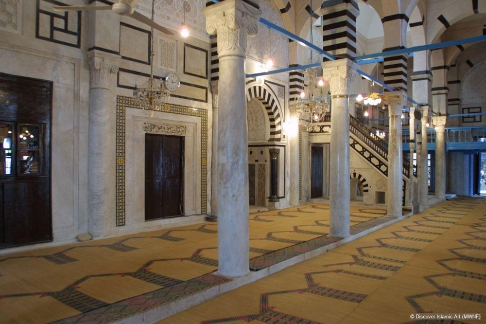
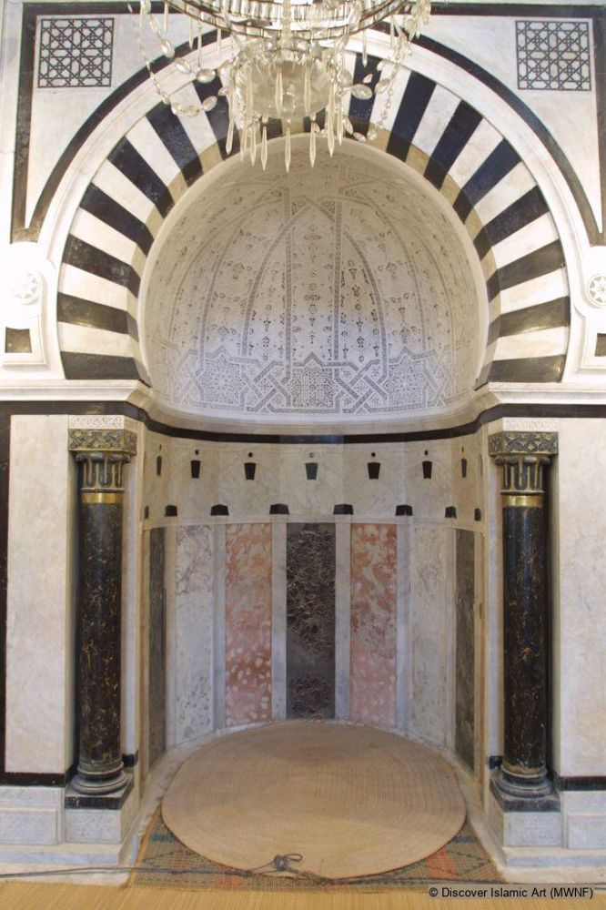
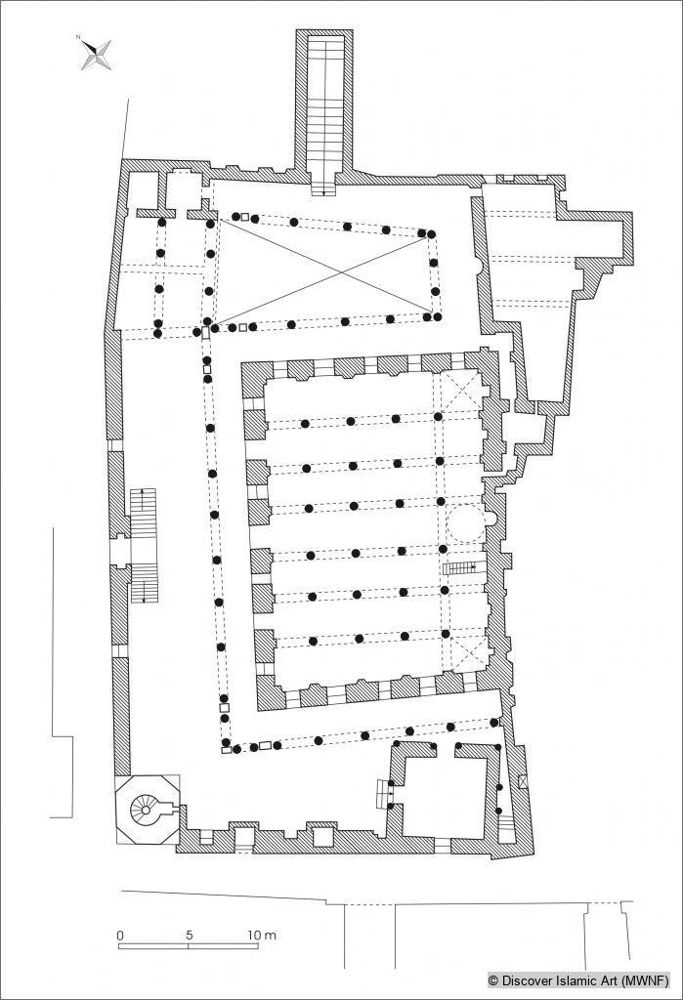

소개
튀니스의 두 번째 하나피파 모스크로, 1655년 베이 함무다 파샤가 세웠습니다. 가느다란 팔각형 미나렛이 구시가의 시디 벤 아루스 거리 위로 솟아 있습니다.
사진







역사
무라드 왕조의 베이 함무다 파샤는 1655년 시디 벤 아루스 거리와 카스바 거리가 만나는 모퉁이에 이 모스크를 짓게 했습니다. 앞서 유세프 데이가 그랬듯이 그도 안뜰에 자신의 영묘를 마련했습니다. 훨씬 뒤에 모나스티르에 지어진 부르기바 대통령의 영묘가 이 무덤에서 영감을 얻었다고 합니다.
건축
17세기 오스만 건축입니다. 대리석 문, 초록 기와지붕, 세 개의 안뜰이 있습니다. 약 24 × 17m의 예배실에는 48개의 기둥 위에 7개의 신랑이 있으며, 벽은 대리석과 조각한 석고로 덮여 있고 이탈리아의 영향을 받은 꽃무늬와 색 대리석 장식이 있습니다. 튀니스에서는 드물게, 안뜰이 창살을 댄 넓은 창을 통해 거리 쪽으로 열려 있습니다. 팔각형 미나렛 꼭대기에는 발코니와 사각뿔 지붕이 있습니다.
자세히
공사에는 이탈리아인 포로들이 참여했을 가능성이 큽니다. 이 모스크는 설립자의 무덤과 예배 장소를 하나로 묶은 묘당 모스크 유형에 속합니다. 동쪽에는 기둥이 늘어선 회랑에 야외 미흐라브가 있어 여름철에 신자들이 그곳에서 예배할 수 있습니다. 미나렛은 서쪽 안뜰의 북서쪽 모서리에 있으며 짙은 황토색의 조개껍데기가 섞인 사암으로 지어졌습니다. 반대쪽 모서리에 있는 함무다 파샤와 그 가족의 묘당은 한 변이 8.20미터이며, 외벽에는 검은 대리석과 흰 대리석이 번갈아 쌓여 있습니다. 예배실은 네 개의 베이로 이루어져 있고, 소용돌이 장식 주두를 얹은 기둥 위의 원통형 볼트로 덮여 있습니다. 미흐라브 앞에는 창건 명문이 새겨진 돔이 있으며, 두 가지 색의 홍예석으로 된 미흐라브의 아치는 검은 돌로 된 작은 기둥 두 개 위에 놓여 있습니다. 민바르는 흰 대리석으로 덮여 있습니다.
주요 연대
- 1655함무다 파샤 베이가 건립
- 1912역사 기념물로 지정
- 1960수리(1960-1961년)
이야기와 전승
역사적 사실모스크와 세운 사람의 묘
무라드 왕조의 함무다 파샤 베이가 1655년에 지은 튀니스의 두 번째 하나피 학파 모스크로, 팔각형 미나렛이 있습니다. 안뜰에는 색색의 대리석으로 꾸민 세운 사람의 영묘가 있습니다.
출처: Wikipedia
역사적 사실마음이 넓은 아내 아지자 오스마나
역사적 사실부르기바의 묘에 영감을 준 묘
금요 예배와 꾸란 낭송
방문자가 제공하고 확인한 정보이거나, 밝힌 공개 출처에서 가져온 정보입니다. 시간을 지어내지 않습니다.
방문 안내
이곳은 무엇보다 예배의 장소입니다. 단정한 차림으로 오시고, 예배실에 들어갈 때는 신발을 벗으며, 예배 시간은 피해 주세요. 여러 대모스크에서 비무슬림 방문객은 안뜰까지만 들어갈 수 있고 예배실에는 들어갈 수 없습니다. 개방 시간은 바뀔 수 있으니 현장에서 확인하세요.
지도에서
자료와 링크
출처
- 이 글은 위 자료(위키백과, Qantara, Discover Islamic Art, 유네스코)를 바탕으로 Mosquées en Tunisie가 작성했으며, 2026년 10월 9일에 확인했습니다.
- Wikidata : Q1584879 (CC0)
- 사진: 위키미디어 공용. 작가와 라이선스는 각 사진 아래에 있습니다.
- ‘자세히’ 부분과 Discover Islamic Art 표시 사진: Museum With No Frontiers(MWNF)의 허락을 받아 수록.
- 위치: OpenStreetMap(ODbL) 및 Wikidata.